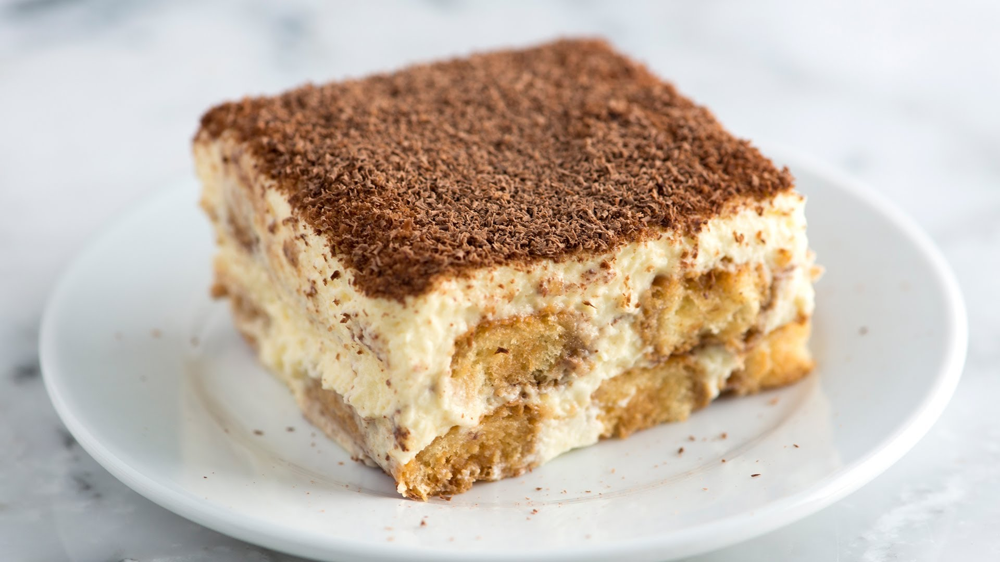

Timarisu recept.
ingredienten.
- 125 ml verse slagroom
- 75 g witte basterdsuiker
- 4 middelgrote eieren
- 500 g mascarpone (zachte roomkaas)
- 5 el koffielikeur (of amandellikeur)
- 200 ml espressokoffie
- 175 g lange vingers
- 1 el cacaopoeder
bereidingswijze.
- Klop de slagroom met ⅕ van de basterdsuiker in een ruime kom met een mixer bijna stijf.
- Maak de gardes van de mixer schoon. Splits de eieren (de eiwitten worden niet gebruikt). Klop in een andere kom de eidooiers met de rest van de suiker in 5 min. tot een lichtgele, romige crème. Meng de mascarpone in delen door de crème en spatel vervolgens de slagroom erdoor.
- Schenk de koffielikeur samen met de espresso in een laag schaaltje of diep bord. Doop de helft van de lange vingers in dit mengsel en bedek de bodem van de schaal ermee. Verdeel de helft van het mascarponemengsel erover. Doop de rest van de lange vingers in het koffiemengsel en verdeel over het mascarponemengsel. Verdeel de rest van het mascarponemengsel erover.
- Laat de tiramisu afgedekt minimaal 2 uur opstijven in de koelkast. Neem vlak voor het serveren uit de koelkast. Strooi met een zeefje de cacaopoeder over de tiramisu.

wilt u ook een voorgerecht en een hoofdgerecht maken?
klik hier beneden!